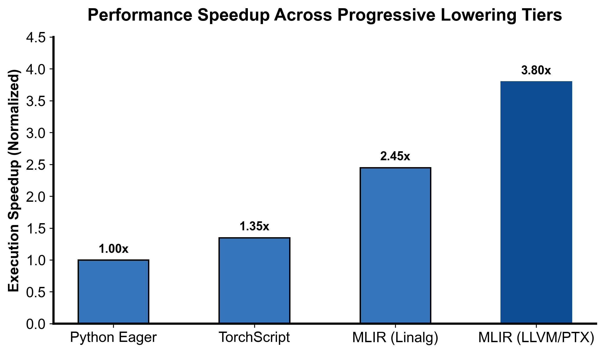

flowchart LR
MLIR["MLIR (LLVM Dialect)"] --> MLIRTrans["mlir-translate --mlir-to-llvmir"]
MLIRTrans --> LLVMIR["标准 LLVM IR 模块 (llvm::Module)"]
LLVMIR --> Opt["LLVM 优化管线 (llc -O3 / 向量化 / 寄存器分配)"]
Opt --> Target["编译为平台原生目标码: x86/ARM ELF 或 NVIDIA PTX/CUBIN"]
第 7 课：逐级 Lowering 到 LLVM Dialect
参考答案版：包含完整代码实现与问答题深度参考解析。建议先独立完成练习题后再展开核对。
本课目标与完成标准
学完后你应能：设计高层→linalg/scf→cf/memref→LLVM 的 lowering pipeline，并区分 LLVM dialect 与 LLVM IR。
通过必须同时满足：
- 独立补齐本课唯一的代码填空题，并通过给定检查；
- 三个问答题均说明因果链，而不是只报术语；
- 能指出至少一个正确性边界和一个性能取舍；
- 总分不低于 8/10，且没有一票否决级概念错误。
前置关系
- 课程前置：编译原理基础、C++ 阅读能力
- 本课在路线中的作用：MLIR 通常保留多层 IR：高层语义先变为结构化计算，再降控制流/内存，最后到 LLVM dialect 并翻译成 LLVM IR。
核心心智模型
核心操作与执行流程图解

图 7-1：MLIR 渐进式多级降低与代码生成阶段性能加速比（基于 scientific-figure-making 绘制）
图 7-2：从 LLVM Dialect 到底层硬件二进制目标代码的翻译运行流程
1. 它是什么，解决什么问题
在现代编译器体系中，“一步到位”将高层神经网络算子直接编译为底层硬件汇编已被证明是一场灾难：复杂性剧烈耦合，优化 Pass 无法复用。 MLIR 确立了工业界最具代表性的编译范式——渐进式多级降低（Progressive Multi-Level Lowering）： \[ \text{High-Level Graph (Torch/TOSA)} \xrightarrow{\text{图融合}} \text{Linalg on Tensors} \xrightarrow{\text{分块缓冲}} \text{SCF / MemRef} \xrightarrow{\text{控制流扁平化}} \text{CF / LLVM Dialect} \xrightarrow{\text{翻译}} \text{LLVM IR} \xrightarrow{\text{机器码}} \text{ELF / PTX} \] 每一个编译阶段仅剥离一层抽象，消灭一个维度的语义（例如：先消除多维张量代数，再消除结构化循环，再消除结构化控制流，最后消除高级内存描述符）。 本课解决的核心工程问题是：理解渐进降级流水线的强前置依赖图，深刻辨析 MLIR 中的 llvm Dialect 与底层独立 llvm::Module（LLVM IR）的本质分水岭，掌握从 LLVM 方言经过 mlir-translate 导出为机器码的端到端完整链路。
2. 它如何工作
渐进降级拓扑与最终代码生成时序如图 7-1 与图 7-2 所示：
- 中端逐步降解（Middle-end Lowering Pipeline）：
- 阶段 1：
linalg算子通过 Tiling 和 Bufferization 降解为scf.for（结构化循环）和memref（物理内存读写）； - 阶段 2：
scf.for/scf.if通过-convert-scf-to-cf展开为带条件跳转的基本块控制流（cf.br/cf.cond_br）； - 阶段 3：
memref通过-finalize-memref-to-llvm展开为包含物理基指针、对齐指针、偏移量与多维步长的一维扁平 LLVM 结构体描述符（MemRef Descriptor Struct）； - 阶段 4：
arith算术指令与func函数通过-convert-arith-to-llvm和-convert-func-to-llvm最终降解为纯粹的llvmDialect。
- 阶段 1：
- LLVM Dialect 的本质： 此时虽然所有操作的前缀都变成了
llvm.（如llvm.func、llvm.add、llvm.load、llvm.return），但它们在内存中仍然完完全全是 MLIR 的 Operation 实例！它们仍然遵循 MLIR 的 C++ 内存对象树，并驻留在mlir::MLIRContext之中。 - 离开 MLIR 世界的物理翻译（
mlir-translate）： 如图 7-2 所示，只有调用mlir-translate --mlir-to-llvmir时，程序才会启动 1:1 的树遍历，在内存中正式构建出真正的 LLVM 原生数据结构llvm::Module和llvm::Instruction。随后移交给标准 LLVM 后端优化器（opt -O3），经过指令选择（ISel）、寄存器分配（RegAlloc）最终编译为目标平台的机器码（x86/ARM ELF 或 NVIDIA PTX/CUBIN）。
3. 正确性条件与常见误区
- Pass 管道的严格拓扑偏序（Pass Order Invariant）： Pass 列表绝对不是任意堆砌的无序集合。
-convert-func-to-llvm必须在所有函数参数中引用的高层类型（如memref）已经被完全转换为 LLVM 合法类型之后才能执行；若过早执行-convert-func-to-llvm，由于函数签名中还残留未知的memref，Pass 会立即报错拒绝降级。 - 混淆 LLVM Dialect 与 LLVM IR： 最常见的新手认知误区是以为打印出
llvm.add就等于生成了汇编或 LLVM IR。llvm.add只是 MLIR 世界里对方言操作的一个镜像抽象，尚未逃离 MLIR 运行时的作用域，无法直接送入汇编器或链接器。 - Index 类型的目标机器位宽依赖（DataLayout Constraint）： MLIR 的
index类型表示平台指针大小。在降级到 LLVM 方言时，必须在 Module 上显式配置目标机器的数据布局属性（DataLayout，如 64 位下index -> i64），否则指针偏移计算会因位宽未决而报错。
4. 性能与工程取舍
- 多层降级的收益倍增： 如图 7-1 所示，高层 Pass 负责做全局性、大粒度的算子融合与并行瓦片切分（耗时几十毫秒，带来数倍吞吐提升）；中层 Pass 负责消除冗余循环；底层 LLVM 负责精细的指令调度、SIMD 向量展开和寄存器染色分配。各层 Pass 各司其职，避免了底层编译器在杂乱无章的扁平代码中尝试逆向工程高阶意图。
- 异构目标（GPU/CPU）的分叉时机（Lowering Forking Point）： 在异构计算编译中，Host（CPU）与 Device（GPU）的代码必须在降级流水线中找准分叉点。过早分叉会导致公共优化逻辑无法复用；过晚分叉则无法充分利用 GPU 独有的硬件层次（如 Warp/Block 与 Shared Memory）。
具体演示
以一个极简整数加法函数的降级终端形态为例：
module {
llvm.func @add(%a: i32, %b: i32) -> i32 {
%sum = llvm.add %a, %b : i32
llvm.return %sum : i32
}
}输入：经由
arith.addi与func.func降级而来的终极 MLIR 形式。操作：
llvm.add与llvm.return严格映射到 LLVM 标量指令集。终检验证：运行
mlir-translate --mlir-to-llvmir，该 MLIR 会被无缝翻译成纯正的 LLVM IR：define i32 @add(i32 %0, i32 %1) { %3 = add i32 %0, %1 ret i32 %3 }此时方可移交
clang或llc编译为.o目标二进制机器码。
请在阅读后先合上这一节，用自己的语言复述“输入状态 → 中间状态 → 输出状态”，再做练习。
实践任务：唯一代码填空题
补齐 LLVM dialect 的整数加法与返回。
规则：只能修改 TODO/______ 所在位置；不要删除断言或放宽误差。代码注释说明了每个边界条件。
Code
%%writefile /tmp/lesson07.mlir
module {
llvm.func @add(%a: i32, %b: i32) -> i32 {
%sum = ______ %a, %b : i32
______ %sum : i32
}
}检查方法
用 mlir-opt 验证，再用 mlir-translate --mlir-to-llvmir 检查得到 LLVM IR；无工具时标记待验证。
提交时请给出：补齐后的代码、实际运行输出（环境不可用时注明“仅静态审查”）以及对失败用例的解释。
Q1
不要背定义：请从输入、状态变化和输出三个阶段解释“逐级 Lowering 到 LLVM Dialect”的工作机制。
你的答案：
Q2
为什么看到 llvm.* op 还不能声称已经生成机器码？
你的答案：
Q3
若目标是 GPU/NVVM，应在哪一层分叉 pipeline？
你的答案：
评分与通过规则
- 代码 4 分：正常输入 2 分，边界输入 1 分，解释实现 1 分；
- Q1～Q3 各 2 分；
- 一票否决：结果碰巧正确但核心因果链错误、删除边界检查、把未运行结果说成实测。
需要提示时按四级机制请求：概念区域 → 具体方向 → 关键局部 → 完整答案。